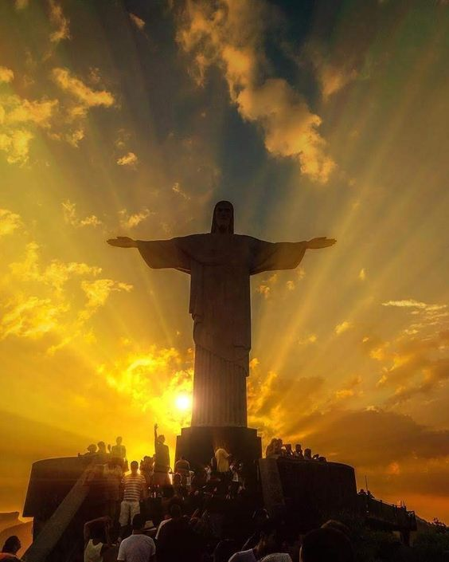

On le voit partout en ce moment, les caméras du monde entier sont braquées sur lui : depuis le début des JO, le Christ Rédempteur qui domine la baie de Rio vole presque la vedette aux sportifs ! Mais connaissez-vous la fascinante histoire de sa construction ? Le premier tome de la saga Les sept sœurs de Lucinda Riley qui se déroule à Rio revient justement sur cette histoire. Nous vous livrons aujourd’hui quelques anecdotes présentes dans le roman : L’idée de construire ce Christ est née dans les années vingt, après la Première Guerre mondiale, lorsque l’Eglise Catholique a voulu s’unir au peuple brésilien. La moitié de l’argent a été collectée en une semaine, et il a été décidé d’ériger la statue au sommet du mont Corcovado, à 710 mètres d’altitude. C’est l’ingénieur Heitor da Silva Costa qui a dessiné la statue. Néanmoins, la tête et les mains ont été sculptées à Paris par Paul Landowski, un sculpteur franco-polonais du mouvement « art déco », très renommé à l’époque. Ces mains ont été sculptées d’après celles d’une femme : pendant des décennies, on a pensé qu’il s’agissait de celles d’une célèbre pianiste brésilienne. Cependant, celle-ci a nié l’information sur son lit de mort. Personne ne sait encore aujourd’hui la véritable identité du modèle. Lucinda Riley a, dans son roman, créé une histoire d’amour dramatique autour de ce mystère. Les moules ont été ramenés au Brésil pour construire une statue en béton qui fait 30 mètres de haut, 28 mètres de large, et pèse 1145 tonnes. Pour sa statue, Heitor Da Silva s’est inspiré des fontaines parisiennes et de leurs mosaïques et a ainsi créé une surface extérieure parfaitement résistante à l’érosion. Ce sont d’ailleurs les habitantes de Rio qui ont appliqué les carreaux un à un, certaines d’entre elles ont même écrit les noms de leurs proches ou des vers de poésie à l’arrière de ces carreaux, qui se trouvent aujourd’hui encore sur la statue… La statue a été officiellement inaugurée en 1931 après quatre années de travaux, et elle est aujourd’hui l’une des « Sept merveilles du monde moderne ». A noter : contrairement à la statue de la Liberté, le Christ Rédempteur n’était pas « un cadeau de la France » comme on l’entend souvent. Vous en savez maintenant plus sur cette statue historique, tant admirée et véritable emblème de Rio !
Le Christ Rédempteur est une statue monumentale située à Rio-de-Janeiro, au Brésil. Elle est le symbole de la ville et, au-delà de ça, du Brésil entier. C'est également un symbole du christianisme parmi les plus importants du Monde. Le Christ rédempteur est aussi une destination touristique importante, avec 600 000 visiteurs par an. Il a été imaginé la première fois en 1850 par un prêtre catholique, mais ce projet n'a vu le jour qu'en 1920, lorsqu'une pétition de soutien pour fut initiée pour la construction d'une statue chrétienne. Une fois le style choisi, la construction a commencé en 1922, et mis neuf ans pour être terminée. Aujourd'hui, le Christ Rédempteur est l'une des sept nouvelles merveilles du monde, un titre donné récemment à 7 monuments du monde pour refléter la liste des 7 merveilles antiques. Il est aussi le monument le plus connu du Brésil, et son symbole, comme la statue de la Liberté l'est pour les Etats-Unis, la tour Eiffel pour la France, ou le Taj Mahal pour l'Inde. Aujourd'hui le Christ de Rio, ou le Corcovado comme on l'appelle plus fréquemment, est un monument très visité, il est parmi les monuments les plus visités du Brésil. Pour y monter il faut s'y prendre tôt et acheter ses tickets à l'avance sur Internet. Les menus ci-dessous vous donnerons plus d'explications sur ce monument en fonction de ce que vous souhaitez.